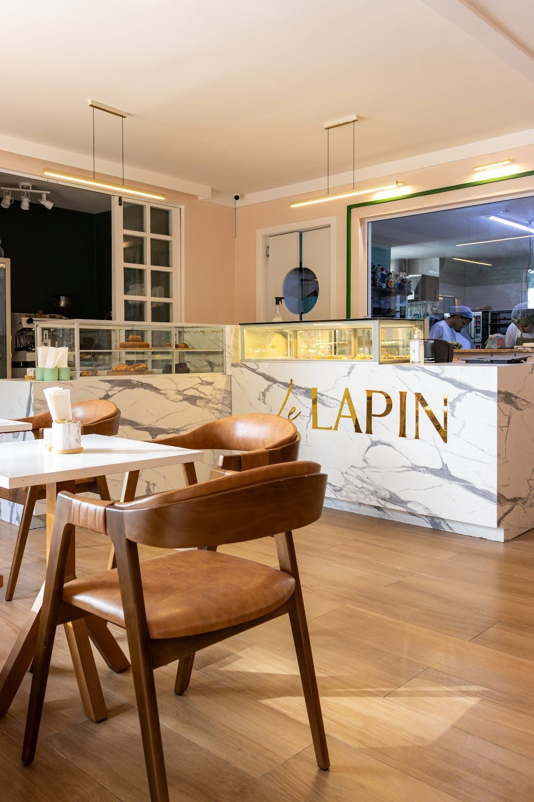
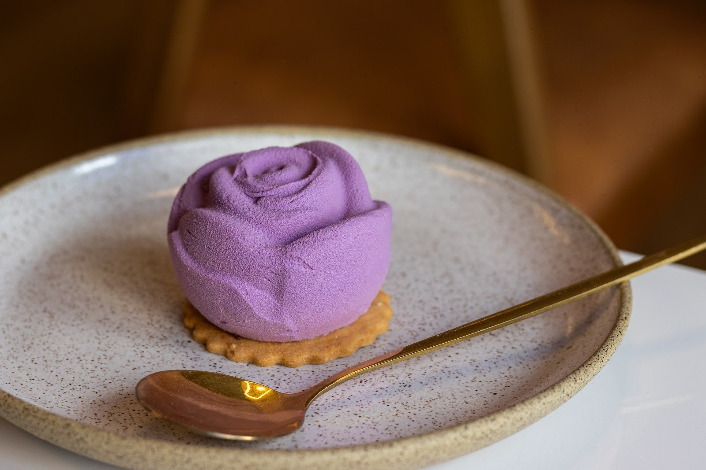
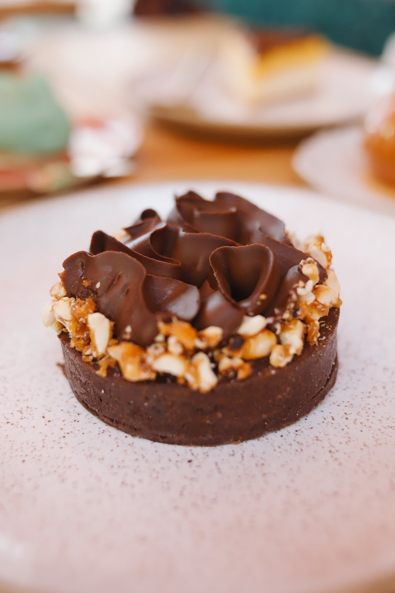
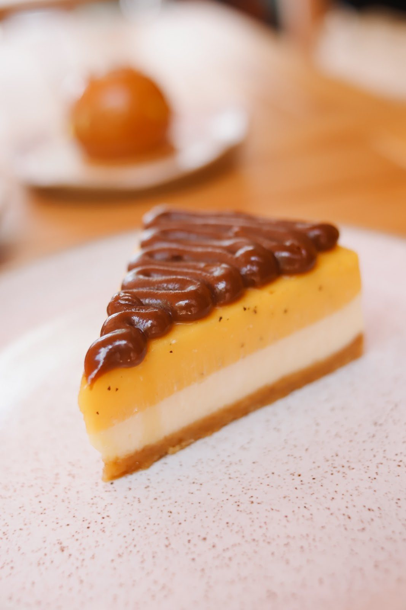
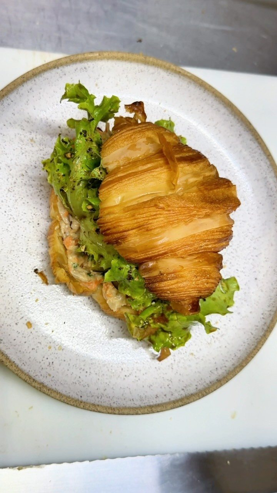
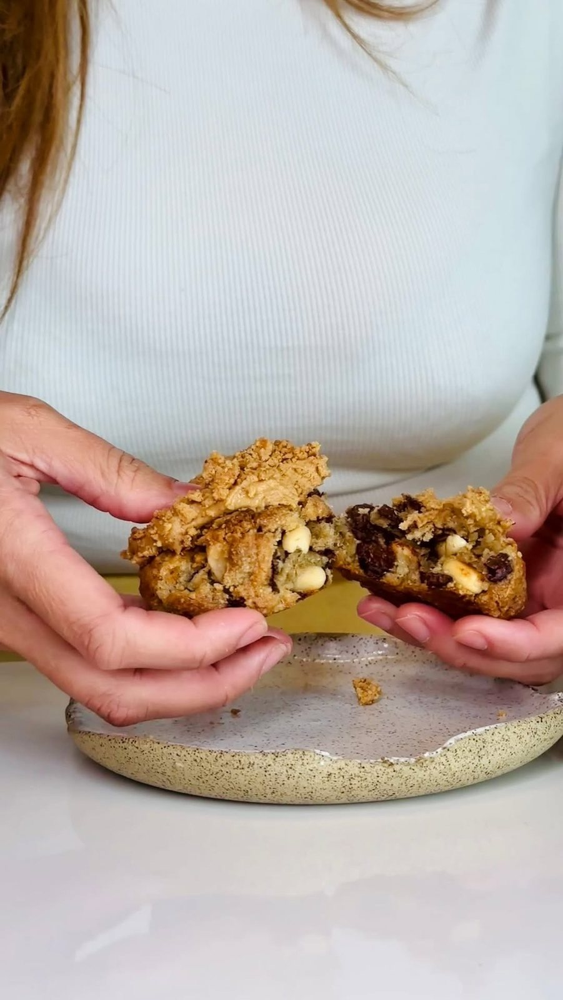
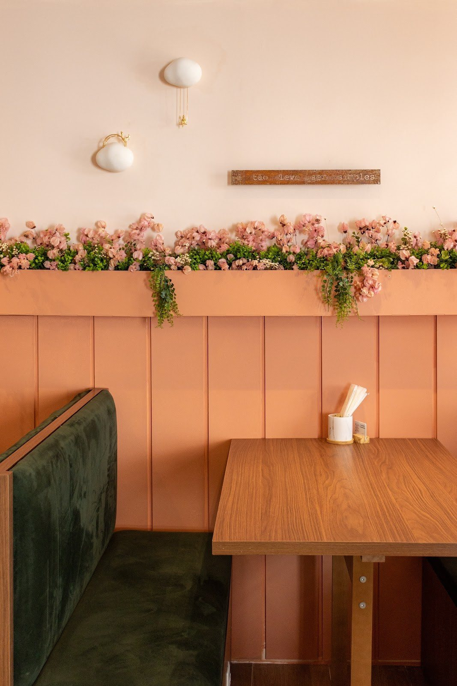
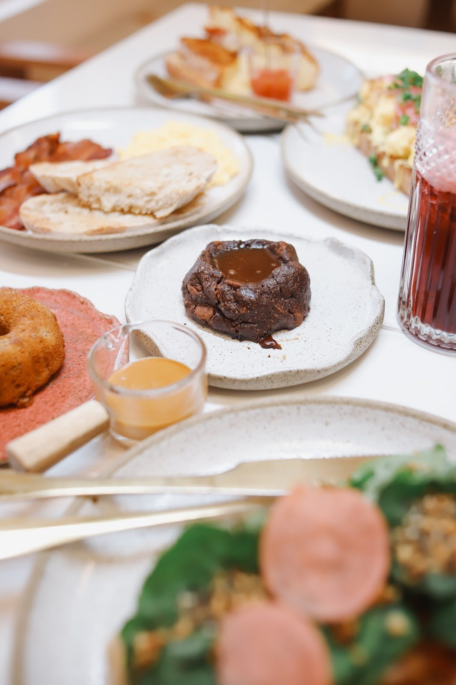
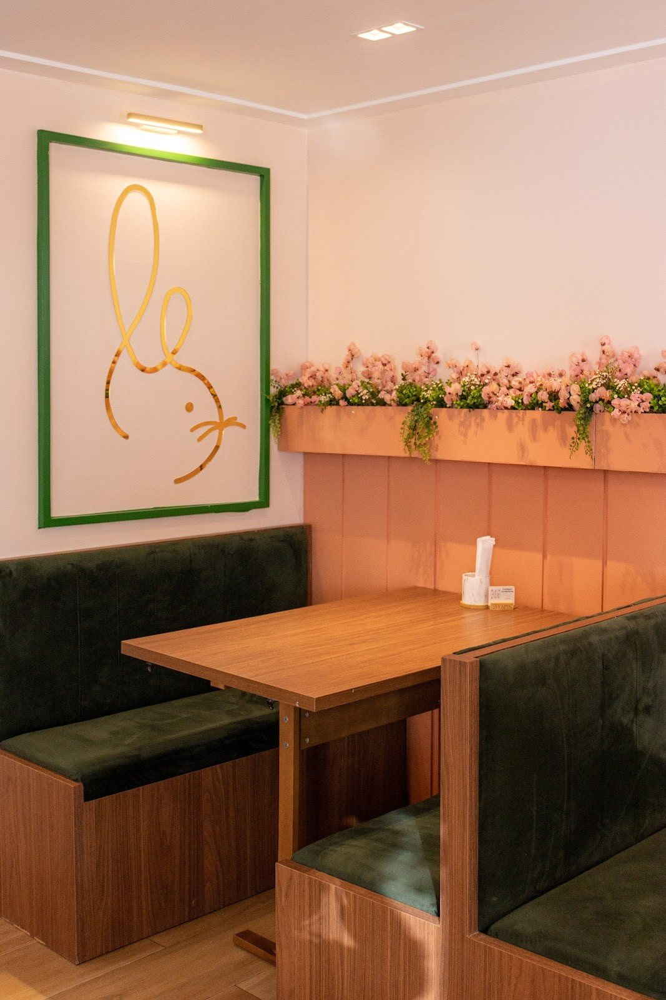

Entremet Lavanda
Mousse de amora, ganache de lavanda, geleia de amora e financier de limão siciliano.
R$ 32,00Le Lapin Confeitaria · Pâtisserie & Brunch · Pituba
Entremets, tartelettes e canelés da chef pâtissier Cecília Moura, café especial de Piatã à tarde e brunch aos sábados e domingos. Para levar, a caixa sai encomendada pelo WhatsApp.


4,8 ★ · 229 avaliações no Google
Por onde começar
Escolha os doces e salgados, veja o total e mande a encomenda pronta pelo WhatsApp da casa.
Encomendar43 itens com preçoSalgados, toasts, doces clássicos, sobremesas especiais e cafés, com busca.
Abrir o cardápioSábado e domingoOvos, benedicts, toasts no sourdough e o cuscuz com bode à bourguignon.
Ver o brunchA vitrine
Entremets, tartelettes e cheesecakes com base sucrée ou sablée. Toque em “+” para pôr na caixa.
Mousse de amora, ganache de lavanda, geleia de amora e financier de limão siciliano.
R$ 32,00
Tortinha de chocolate, caramelo de missô, cremoso de chocolate 75% e amendoim crocante.
R$ 32,00
Creme de queijo assado, curd de maracujá, caramelo de chocolate. Base de biscoito sablée artesanal.
R$ 30,00Fotos da vitrine publicadas pela casa, para ilustrar a linha; composição e preço são os do cardápio. Ver as 10 sobremesas
Técnica e sotaque
Canelé “caramelizado por fora e macio por dentro”, croissant com manteiga de limão siciliano, croque monsieur gratinado e benedicts no brioche.
Sonho de porco teriyaki com maionese de missô e furikake de amendoim, tartelette com caramelo de missô e o Camarão Natsu com katsobushi.
Cuscuz com bode ensopado “ao estilo francês (boeuf bourguignon)” e queijo coalho, tartelette com cocada de forno e cheesecake de maracujá.
Do balcão

Patê de atum confitado na casa, picles de pepino japonês e furikake de amendoim, no croissant. Chegou “ao nosso cardápio de primavera/verão”. R$ 44.

Chocolate e caramelo de missô; limão, avelã e frutas vermelhas; ou paçoca. “Qual sabor escolher para acompanhar o seu café da tarde?” R$ 20.

Para a pausa no salão: o doce francês com açúcar, canela e recheio de doce de leite, R$ 12,90, e o V60 com café especial de Piatã, R$ 13,90.

Le Brunch
“Nosso Brunch acontece todos os sábados e domingos e podemos dizer? Quem conhece, se apaixona!”Le Lapin, Instagram, 24/09/2026O cardápio do brunch inteiro
Encomenda para retirada
Hoje a encomenda é combinada por mensagem, item por item. Aqui o cliente toca em “+”, vê o total e manda tudo de uma vez, sem comissão de aplicativo.
Delivery: pelo iFood da Le Lapin
A caixa da tarde

A chef
A Le Lapin começou em 2016. Em 2019 Cecília foi para São Paulo, onde se tornou chef pâtissier pelo Le Cordon Bleu, e em dezembro de 2022 a casa ganhou o espaço da Pituba, onde funciona até hoje.
“Confeitaria de técnica francesa, com sobremesas autorais desenvolvidas pela chef pâtissier Cecília Moura.”Le Lapin, descrição da ficha do GoogleA história da Le Lapin
Quem prova, conta
229 avaliações no Google
Consulta de 03/10/2026Ainda não trazemos depoimentos: na versão final, entram avaliações escolhidas pela casa, com o nome de quem escreveu.
Galeria
Visite a Lela
“Ficamos localizados em uma rua tranquila próximo a Av. Paulo VI, atrás da rua do canal na Pituba.”Le Lapin, ficha do Google
Qua a sex 13h–19h · sáb e dom 8h30–12h
Horário da ficha do Google. A tarde de sábado e domingo: confirme pelo WhatsApp.
“Arte & Brunch”: sábado, 10/10, às 9h, R$ 190, com prato de 27 cm e brunch incluso. Inscrição pelo link da bio ou por DM, conforme o post de 30/09.
Dúvidas frequentes
Sim. Encomendas e retiradas são combinadas pelo WhatsApp (71) 99238-0084. Os cardápios avisam: “Cobramos embalagem viagem”.
O delivery é pelo iFood da Le Lapin. Bairros e taxas aparecem no aplicativo.
Aos sábados e domingos, das 8h30 às 12h, com cardápio próprio.
A confeitaria e o café abrem das 13h às 19h. Segunda e terça, a casa fecha. A tarde de sábado e domingo: confirme pelo WhatsApp.
A casa não publica reserva de mesa. Para grupos, fale pelo WhatsApp.
No brunch, o cardápio marca o Pudim de Chia, o Avocado & Eggs e o Camarão Natsu como sem lactose; o Pão, ovos e bacon tem versão sem lactose avisando a cozinha.